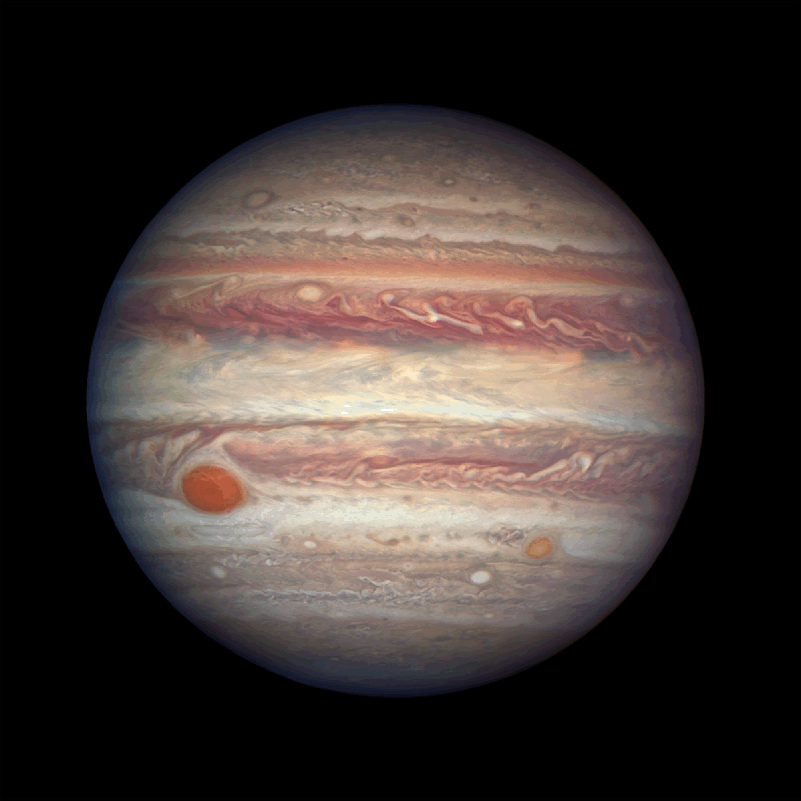
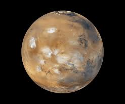
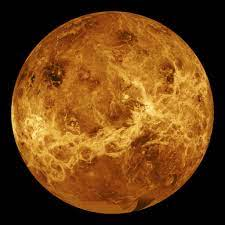

The Planets Around Us
|  |  |  |
 | |
| Planet Name | Jupiter | Mars | Mercury | Venus |
| Mass | 1.90 x 1027 | 6.42 x 1023 | 3.3 x 1023 | 4.87 x 1024 |
| Diameter | 142,800 km | 6787 km | 4879.4 km | 12104 |
| Mean Density | 1314 kg/m3 | 3940 kg/m3 | 5420 kg/m3 | 5250 kg/m3 |
| Escape Velocity | 59500 | 5000 | 4300 | 10400 |
| Average Distance from Sun | 5.203 AU (778,412,020 km) | 1.524 AU (227,936,640 km) | 0.387 AU (57,909,175 km) | 0.723 AU (100,208,930 km) |
Rotation Period (length of day in Earth days) |
0.41 | 1.026 | 58.65 | 243.02 (retrograde) |
Revolution Period (length of year in Earth years) |
11.86 | 686.98 | 87.97 | 224.7 |